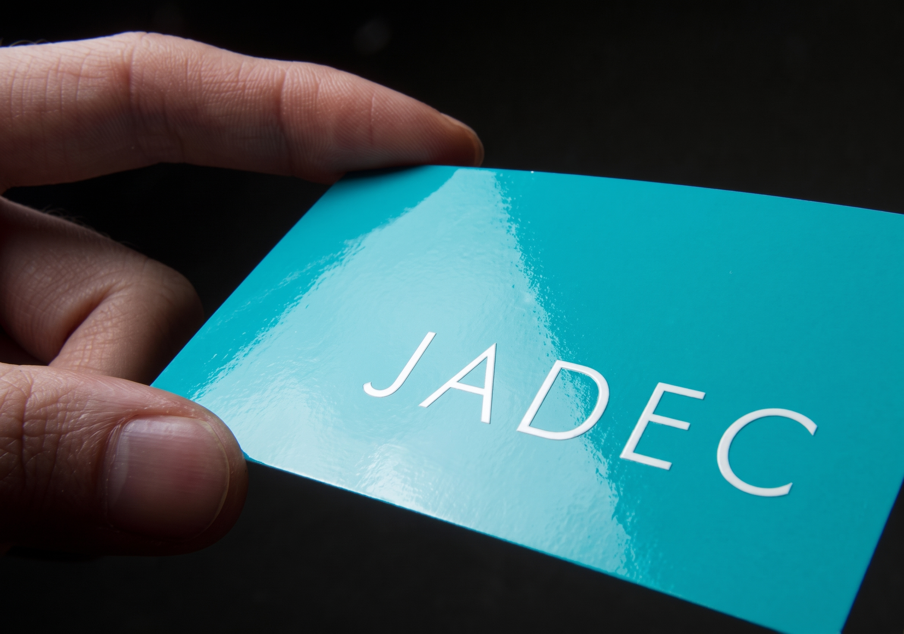
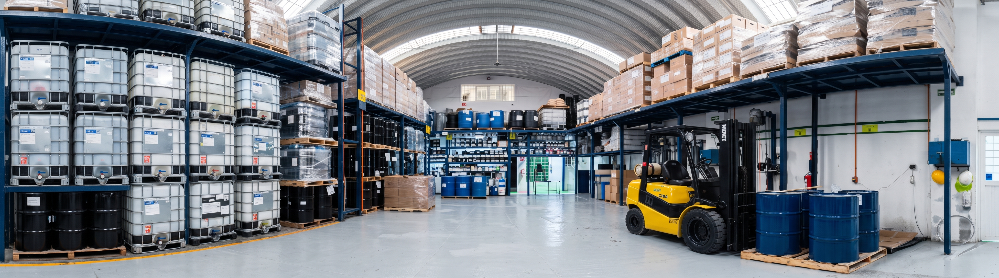
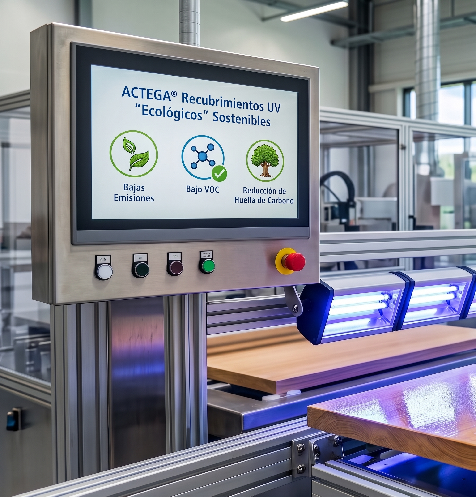
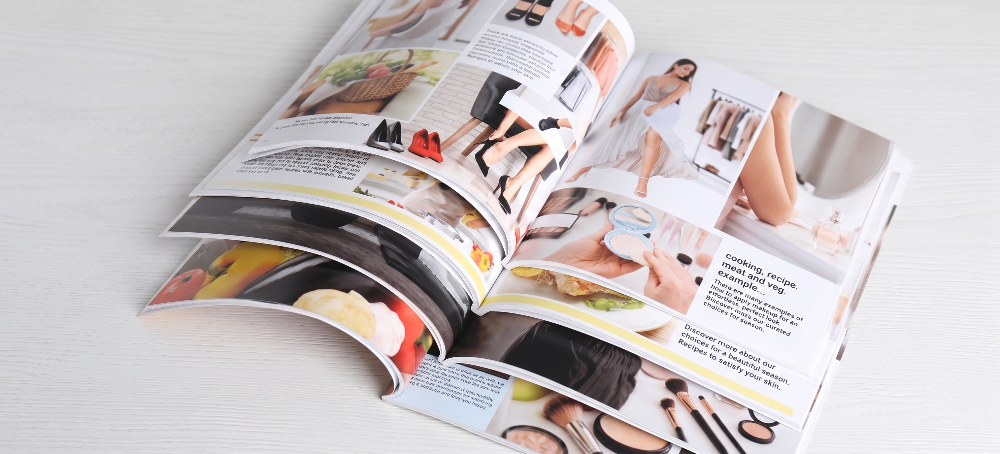
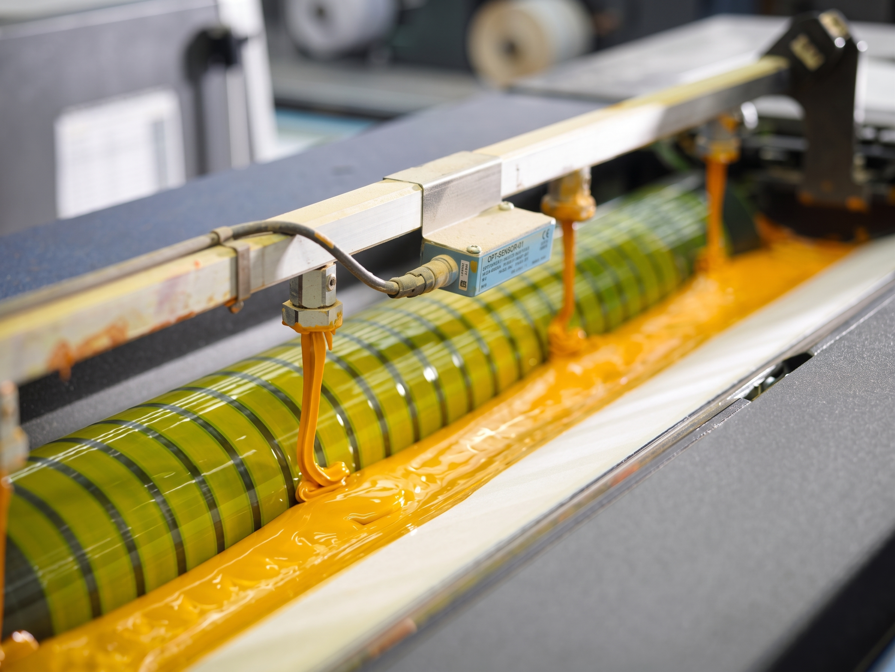
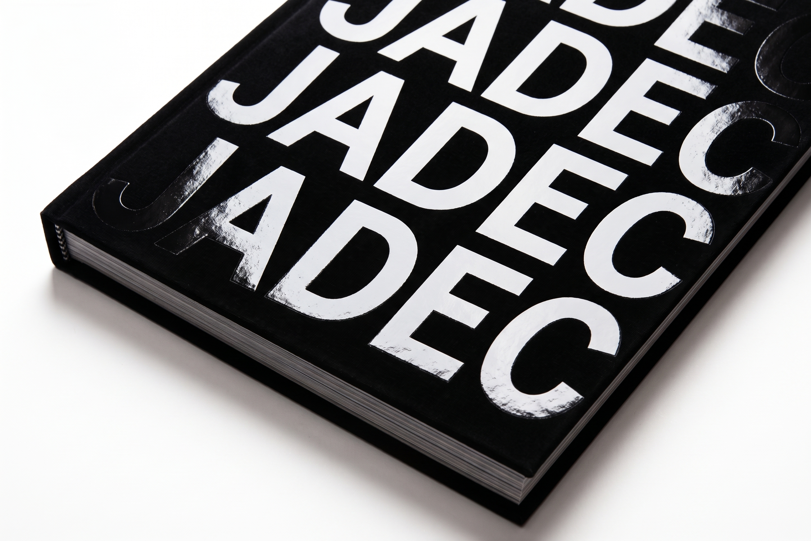
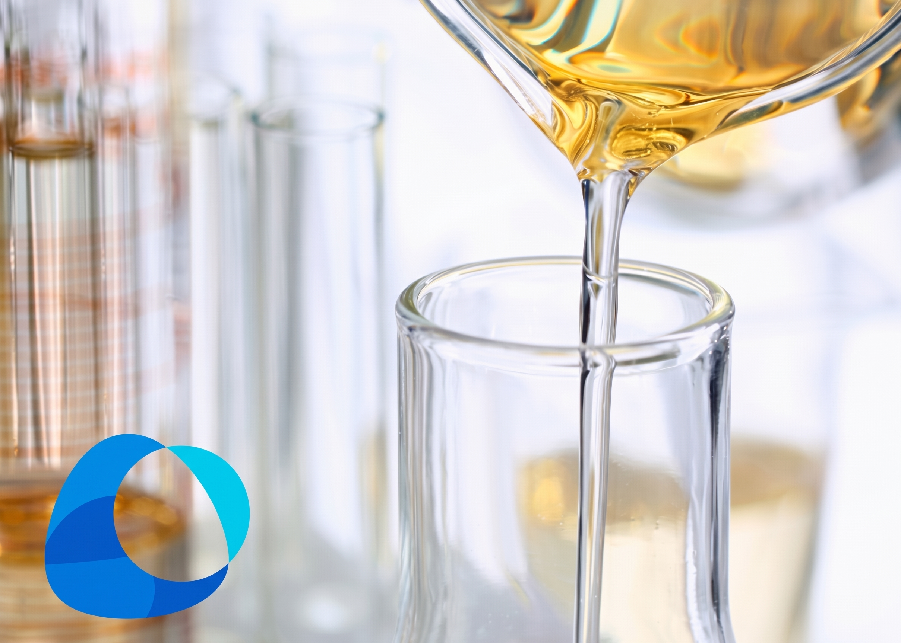

Máximo Brillo y Resistencia
Los recubrimientos UV de ACTEGA® son la opción principal para cajas plegables, impresión comercial y sustratos no absorbentes debido a que ofrecen máximo nivel de brillo y excelente protección
Recubrimientos UV avanzados, formulaciones de baja migración para empaque alimentario y acabados sostenibles desarrollados para responder a las exigencias técnicas más complejas.

Tecnología formulada para garantizar máxima adherencia, protección superior y curado instantáneo en prensas de alta velocidad.

Los recubrimientos UV de ACTEGA® son la opción principal para cajas plegables, impresión comercial y sustratos no absorbentes debido a que ofrecen máximo nivel de brillo y excelente protección

Los recubrimientos UV de ACTEGA® son altamente ecológicos porque ofrecen las emisiones, la huella de carbono y los niveles de VOC más bajos frente a las alternativas químicas convencionales.

Los recubrimientos UV optimizan la impresión comercial (como revistas y publicidad) al ofrecer alto brillo, secado inmediato y excelente resistencia al manejo frecuente.

Los recubrimientos UV para tren de tinta de ACTEGA® son la solución ideal para imprentas que cuentan con equipos de curado UV, incluso si carecen de torres de recubrimiento dedicadas.

Los recubrimientos UV mate de ACTEGA® transforman el aspecto visual de las impresiones y ofrecen diversos niveles de acabado mate, adaptándose perfectamente a aplicaciones de impresión en banda, pliegos y serigrafía.

El avance de la impresión digital de alta velocidad ha generado la necesidad técnica de aumentar el brillo en tóneres opacos y lograr recubrimientos uniformes en sustratos porosos.